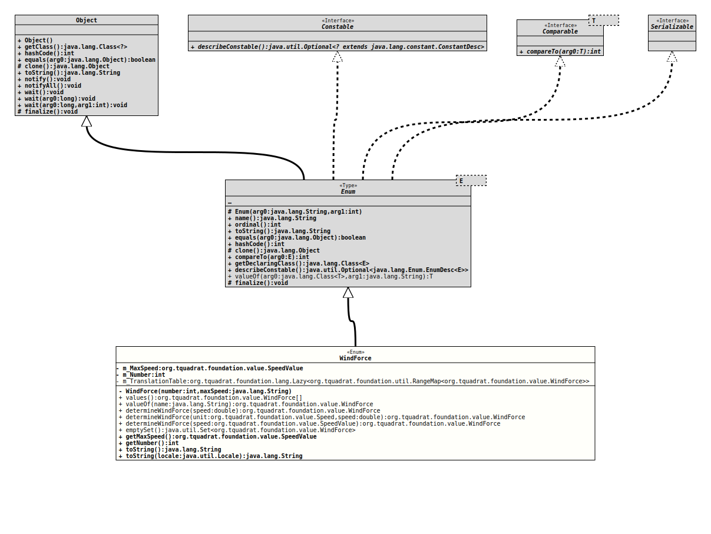

- All Implemented Interfaces:
Serializable,Comparable<WindForce>,Constable
@ClassVersion(sourceVersion="$Id: WindForce.java 1073 2023-10-01 11:08:51Z tquadrat $")
@API(status=STABLE,
since="0.0.4")
public enum WindForce
extends Enum<WindForce>
The wind force according to the Beaufort table.
- Author:
- Thomas Thrien (thomas.thrien@tquadrat.org)
- Version:
- $Id: WindForce.java 1073 2023-10-01 11:08:51Z tquadrat $
- Since:
- 0.0.4
- UML Diagram
-

UML Diagram for "org.tquadrat.foundation.value.WindForce"
{kind=link}
-
Nested Class Summary
Nested classes/interfaces inherited from class java.lang.Enum
Enum.EnumDesc<E extends Enum<E>> -
Enum Constant Summary
Enum ConstantsEnum ConstantDescriptionWind force 0 Bft.Wind force 1 Bft.Wind force 10 Bft.Wind force 11 Bft.Wind force 12 Bft.Wind force 13 Bft.; although it is not official, we added it to the list.Wind force 2 Bft.Wind force 3 Bft.Wind force 4 Bft.Wind force 5.Wind force 6.Wind force 7.Wind force 8.Wind force 9. -
Field Summary
FieldsModifier and TypeFieldDescriptionprivate final SpeedValueThe maximum wind speed in m/s.private final intThe numerical value for the wind force.The translation table. -
Constructor Summary
Constructors -
Method Summary
Modifier and TypeMethodDescriptionstatic WindForcedetermineWindForce(double speed) Returns the wind force for the given wind speed.static WindForcedetermineWindForce(Speed unit, double speed) Returns the wind force for the given wind speed.static WindForcedetermineWindForce(SpeedValue speed) Returns the wind force for the given wind speed.emptySet()Return an emptySetofWindForceinstances.final SpeedValueReturns maximum wind speed for this wind force.final intReturns the wind force number.final StringtoString()final StringReturns the String representation for this wind force for the given language.static WindForceReturns the enum constant of this class with the specified name.static WindForce[]values()Returns an array containing the constants of this enum class, in the order they are declared.
-
Enum Constant Details
-
BFT0
Wind force 0 Bft. -
BFT1
Wind force 1 Bft. -
BFT2
Wind force 2 Bft. -
BFT3
Wind force 3 Bft. -
BFT4
Wind force 4 Bft. -
BFT5
Wind force 5. -
BFT6
Wind force 6. -
BFT7
Wind force 7. -
BFT8
Wind force 8. -
BFT9
Wind force 9. -
BFT10
Wind force 10 Bft. -
BFT11
Wind force 11 Bft. -
BFT12
Wind force 12 Bft. -
BFT13
Wind force 13 Bft.; although it is not official, we added it to the list.
-
-
Field Details
-
m_MaxSpeed
The maximum wind speed in m/s. -
m_Number
The numerical value for the wind force. -
m_TranslationTable
The translation table.
-
-
Constructor Details
-
WindForce
Creates a newWindForceobject.- Parameters:
number- The numerical wind force.maxSpeed- The maximum wind speed for this wind force in m/s.
-
-
Method Details
-
values
Returns an array containing the constants of this enum class, in the order they are declared.- Returns:
- an array containing the constants of this enum class, in the order they are declared
-
valueOf
Returns the enum constant of this class with the specified name. The string must match exactly an identifier used to declare an enum constant in this class. (Extraneous whitespace characters are not permitted.)- Parameters:
name- the name of the enum constant to be returned.- Returns:
- the enum constant with the specified name
- Throws:
IllegalArgumentException- if this enum class has no constant with the specified nameNullPointerException- if the argument is null
-
determineWindForce
Returns the wind force for the given wind speed.- Parameters:
speed- The wind speed in m/s.- Returns:
- The wind force.
-
determineWindForce
Returns the wind force for the given wind speed.- Parameters:
unit- The unit for the speed value.speed- The wind speed.- Returns:
- The wind force.
-
determineWindForce
Returns the wind force for the given wind speed.- Parameters:
speed- The wind speed.- Returns:
- The wind force.
-
emptySet
Return an emptySetofWindForceinstances.- Returns:
- An empty set.
-
getMaxSpeed
Returns maximum wind speed for this wind force.- Returns:
- The maximum speed.
-
getNumber
Returns the wind force number.- Returns:
- The number.
-
toString
-
toString
Returns the String representation for this wind force for the given language.- Parameters:
locale- The locale.- Returns:
- The String representation.
-